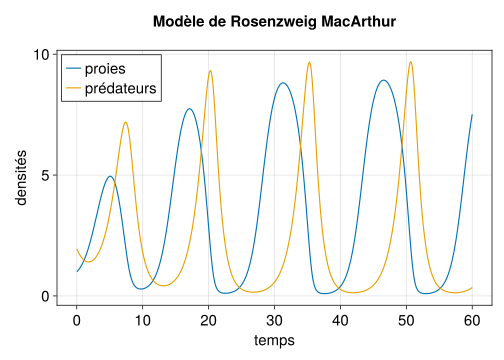

using StaticArrays
using DifferentialEquations
using CairoMakieSimulation améliorée
Modèle de Rosenzweig MacArthur
Nous considérons le modèle de dynamique de populations de Rosenzweig et MacArthur que nous avons déjà vu (Rosenzweig and MacArthur (1963), Turchin (2003), Smith (2008)).
\left\{\begin{array}{l} \dot x = \displaystyle rx\left(1-\frac{x}{K}\right) - c \frac{x}{h+x} y\\[.3cm] \dot y = b\displaystyle \frac{x}{h+x} y - m y \end{array}\right. \tag{1}
L’objectif est de réaliser des simulations performantes sur le tracé du diagramme de bifurcations, avec l’estimation par simulation du cycle limite. Ce type de simulations lourdes se prête bien à se genre de benchmark.
Stratégie pour le code
Pour un tel problème de dimension réduite, nous allons utiliser des static arrays (tableaux à adresse fixe dans la mémoire1), ce qui permettra de ne pas crééer une multitude d’objets pour la simulation mais de toujours modifier le même objet en mémoire.
1 depuis le package StaticArrays.jl
Par ailleurs nous allons essayer de nous conformer au maximum aux préconisations :
- ne pas utiliser de variables globales
- définir des fonctions
- mettre les paramètres dans un nombre limité de variables et les passer en arguments des fonctions
Pour ce dernier point, nous allons définir des types (struct) spécifiques.
Nous commençons par importer les packages que nous allons utiliser:
Type spécifique pour les paramètres
Nous définissons un struct pour les paramètres du modèle de Rosenzweig MacArthur.
Type pour les paramètres :
# parameters struct
@kwdef struct ParRma
r::Float64 = 1.0
K::Float64 = 10.0
c::Float64 = 1.0
h::Float64 = 2.0
b::Float64 = 2.0
m::Float64 = 1.0
end
Note
La macro @kwdef permet de renseigner des valeurs par défaut des champs du struct.
Important
Lors de la création d’un struct, on peut être tenté d’utiliser des types de champs les plus larges possibles, comme par exemple r::Real = 1.0 ou r::Number = 1.0.
C’est une très mauvaise idée : Real et Number sont des types abstraits qui englobent de nombreux types concrets (e.g. Int64 et Float64). Par construction ils ne permettent pas de spécifier un espace mémoire de taille fixe comme le font les types concrets, et ne permettent donc pas d’optimiser le code à la précompilation2.
A l’inverse, pour les fonctions XXXXXXXXXXXXXXXX
2 Par exemple, la fonction cy_rma() définie plus bas (la plus coûteuse en temps de calcul) est 70 fois plus lente avec un ParRma qui définit ses champs en Real plutôt qu’en Float64, (exécution de ~0.5s à ~35s après précompilation)
On peut créer des objets de type ParRma via les constructor par défaut; on accède à un champ particulier via objet.champ :
# with the struct definition, ParRma objects are immutable
prma = ParRma() # constructor with default values
prma2 = ParRma(K = 8.0) # default values except K = 20.0
@show prma
@show prma.K
@show prma2.K;prma = ParRma(1.0, 10.0, 1.0, 2.0, 2.0, 1.0)
prma.K = 10.0
prma2.K = 8.0
Note
La macro @show est assez explicite
Le ; permet de ne pas renvoyer l’évaluation de la commande prma2.K (qui vaut 8.0) étant donné que nous avons déjà forcé la sortie via @show
Fonctions
Nous définissons les différentes fonctions impliquées dans le modèle de Rosenzweig MacArthur, la logistique et la réponse fonctionnelle de Holling II.
Pour la logistique :
function logistic(x::Real, p::ParRma)
(; r, K) = p # deconstruct/get r and K from p
return r*x*(1-x/K)
end
Note
- les notations
var::Typepermettent de spécifier le type de l’argument de la fonction3 - la notation
(; r, K) = ppermet d’extraire (deconstruct) les champsretKdu paramètrepqui est un objet de typeParRma
3 C’est une des manières de faire du multiple dispatch, en définissant différentes méthodes pour les fonctions selon le type de l’argument
Pour la réponse fonctionnelle (sans le paramètre c) :
function holling2(x::Real, p::ParRma)
(; h) = p # deconstruct h from p
return x/(x+h)
endConditions initiales
Pour utiliser les static arrays avec DifferentialEquations.jl il faut que l’état (donc la condition initiale) et les dérivées rendues par le modèle soient des static arrays (ici un SVector).
Nous définissons un struct de condition initiales, avec pour champs x0, y0 et un Svector composé de ces deux valeurs :
# initial value struct
@kwdef struct IniV
x0::Float64 = 1.0
y0::Float64 = 1.95
u0::SVector{2, Float64} = SVector(x0, y0)
end
# construct some initial condition
@show iniv = IniV();iniv = IniV() = IniV(1.0, 1.95, [1.0, 1.95])Nous définissons un constructeur additionnel pour le type IniV qui à partir d’un SVector de longueur 2, construit l’objet IniV correspondant4 (nous nous en servirons plus bas dans la fonction cy_rma())
4 il s’agit d’une forme de multiple dispatch sur le constructeur, avec plusieurs méthodes différents selon le type d’arguments utilisés
# new constructor method for struct IniV
# takes a length 2 SVector to construct the object (self definition)
IniV(u0::SVector{2, Float64}) = IniV(x0 = u0[1], y0 = u0[2])
# construct an initial condition with this constructor
@show IniV(SVector(3.0, 3.0));IniV(SVector(3.0, 3.0)) = IniV(3.0, 3.0, [3.0, 3.0])Modèle
On définit les équations du modèle en exploitant les fonctions définies plus haut et la structure des paramètres, en renvoyant les dérivées sous forme de SVector :
function mod_rma(u::SVector{2}, p::ParRma, t)
(; c, b, m) = p # get c, b, m from p
x = u[1] # use x, y notations
y = u[2]
dx = logistic(x, p) - c * holling2(x,p) * y
dy = b * holling2(x, p) * y - m * y
return SVector(dx, dy) # return derivatives as SVector
endSimulation simple
On définit les paramètres du temps dans un struct :
# time parameters struct
@kwdef struct ParTime
tspan::Tuple{Float64, Float64} = (0.0, 60.0)
tstep::Float64 = 0.1
end
# construct a time parameter
ptime = ParTime()On définit une fonction qui définit le problème de simulation, l’intègre et retourne la solution, avec pour arguments positionnels la condition initiale, les paramètres et les paramètres de temps, et comme keyword argument le paramètre booléen final.
Lorsque final = false (par défaut), la fonction renvoie toute la solution. Lorsque final =true la fonction renvoie la valeur finale de la simulation, ce dont nous nous servirons plus bas dans l’estimation des extremas du cycle limite.
function sim_rma(iniv::IniV, p::ParRma, pt::ParTime; final::Bool = false)
# deconstruct time parameter
(; tspan, tstep) = pt
(; u0) = iniv
# define and solve simulation problem
prob_rma = ODEProblem(mod_rma, u0, tspan, p)
if !final # if final == false compute whole solution
sol_rma = solve(prob_rma; reltol = 1e-6, saveat = tstep)
else # if final == true compute only final state
sol_rma = solve(
prob_rma;
reltol = 1e-6,
save_everystep = false,
save_start = false,
)
end
return sol_rma
end
@time sim_rma(iniv, prma, ptime); 1.338883 seconds (893.85 k allocations: 57.674 MiB, 1.00% gc time, 99.97% compilation time: 100% of which was recompilation)
Note
La macro @time renvoit le temps (et qqes éléments sur la computation) mis pour calculer la commande qui la suit, ici la simulation.
Une fois la fonction précompilée à la première exécution, la performance est incomparable (4 ordres de grandeur plus rapide sur la fonction sim_rma()) :
@time sim_rma(iniv, prma2, ptime); 0.000207 seconds (328 allocations: 47.234 KiB)Solution contre le temps
Finalement, on définit une fonction qui simule et produit un graphique de la solution contre le temps, avec pour arguments la condition initiale, les paramètres et les paramètres de temps :
function plot_rma(iniv::IniV, p::ParRma, pt::ParTime)
# compute the simulation
sol_rma = sim_rma(iniv, p, pt)
# initialize figure
fig = Figure(; fontsize = 20)
ax = Axis(fig[1,1];
title = "Modèle de Rosenzweig MacArthur\n ",
xlabel = "temps",
ylabel = "densités",
)
# plot solution
lines!(ax, sol_rma.t, sol_rma[1,:]; lw = 2, label = "proies")
lines!(ax, sol_rma.t, sol_rma[2,:]; lw = 2, label = "prédateurs")
axislegend(; position = :lt)
return fig
endFinalement on exécute cette fonction pour tracer la simulation :
plot_rma(iniv, prma, ptime)
Diagramme de bifurcations
Nous calculons ici le diagramme de bifurcations : les asymptotiques des prédateurs y^* en fonction de K.
Équilibres
Il n’y a pas besoin de simulation ici puisque les lieux des équilibres sont facilement calculables analytiquement (cf. cette page).
Nous définissons une fonction qui prend les paramètres du modèle et renvoit des tuples définissant les différentes branches d’équilibres (K, y^*) (avec en kwarg un Kmax et un Kstep avec des valeurs par défaut).
function eqy_rma(p::ParRma; Kmax::Real = 8.0, Kstep::Real = 0.1)
(; r, c, h, b, m) = p # deconstruct p (K is useless since it is varied)
# define bifurcation K values
Ktrans = m*h/(b-m)
Khopf = h+2*m*h/(b-m)
# drops an error if Kmax is too small
if Kmax < Khopf
error("For a full computation of equilibria types, Kmax must be greater than $Khopf")
end
# y equilibria
# below transcritical : only y=0
Krg1 = 0:Kstep:Ktrans
y01 = ones(length(Krg1)).*0 # broadcasting
eqs1 = (Krg = Krg1, y0 = y01, yco = nothing)
# between transcritical and Hopf : y=0 and y>0
Krg2 = Ktrans:Kstep:Khopf
y02 = ones(length(Krg2)).*0
yco2 = [r/c*(h+m*h/(b-m))*(1-m*h/(b-m)/K) for K in Krg2]
eqs2 = (Krg = Krg2, y0 = y02, yco = yco2)
# above Hopf : y=0 and y>0
Krg3 = Khopf:Kstep:Kmax
y03 = ones(length(Krg3)).*0
yco3 = [r/c*(h+m*h/(b-m))*(1-m*h/(b-m)/K) for K in Krg3]
eqs3 = (Krg = Krg3, y0 = y03, yco = yco3)
return eqs1, eqs2, eqs3
endCycle limite
On définit une fonction qui renvoit un tuple contenant les valeurs de K et les extremas du cycle limite apparaissant pour K > K_{hopf} = h+\frac{2mh}{b-m}.
La fonction prend pour argument les paramètres, et fait appel à la fonction sim_rma() avec les méthodes final = true (pour les transitoires) et final = false (pour les extremas du cycle limite). Elle utilise aussi le constructeur supplémentaire pour les objets IniV.
function cy_rma(p::ParRma; Kmax::Float64 = 8.0, Kstep::Float64 = 0.01)
# parameters and K range
(; r, c, h, b, m) = p # deconstruct p (K is useless since it is varied)
Khopf = h+2*m*h/(b-m)
Krgh = Khopf-Kstep:Kstep:Kmax
# drops an error if Kmax is too small
if Kmax < Khopf
error("For a computation of the limit cycle, Kmax must be greater than $Khopf")
end
# for storage
ycmin = zero(Krgh)
ycmax = zero(Krgh)
# initial value and time parameters
iniv = IniV()
ptime = ParTime()
# transient integration time
ptrans = ParTime(tspan = (0.0, 8000.0))
for (i, Kh) in enumerate(Krgh)
# construct parameter from p, with K = Kh of the loop
prmabif = ParRma(r, Kh, c, h, b, m)
# simulate transient, get final state
utr = sim_rma(iniv, prmabif, ptrans; final = true)[:,1]
inivtr = IniV(utr) # construct new init value
# start from end of transient, simulate limit cycle
sol_cyc = sim_rma(inivtr, prmabif, ptime)
# get min and max y along the cycle
ycmin[i] = minimum(sol_cyc[2,:])
ycmax[i] = maximum(sol_cyc[2,:])
end
cycle = (Krg = Krgh, ycmin = ycmin, ycmax = ycmax)
return cycle
end
@time cy_rma(prma); 1.676003 seconds (5.19 M allocations: 119.787 MiB, 0.79% gc time, 71.77% compilation time: 100% of which was recompilation)Après précompilation, ce calcul est encore plus rapide :
@time cy_rma(prma2); 0.479642 seconds (4.62 M allocations: 82.282 MiB, 1.86% gc time)A titre d’exemple, la simulation sur cette page prenait de l’ordre de 20 fois plus longtemps pour un calcul similaire.
Représentation graphique
Finalement, nous définissons une fonction permettant de représenter le diagramme de bifurcations, qui fait appel aux fonctions eqy_rma() et cy_rma() définies ci-dessus :
function plot_bif_rma(p::ParRma; Kmax = 8.0, Kstep = 0.1)
# initialize figure
fig = Figure(; fontsize = 20)
ax = Axis(fig[1,1];
title = "Bifurcations du modèle de Rosenzweig MacArthur\n ",
xlabel = "capacité de charge 𝐾",
ylabel = "densités",
)
# plot equilibria
eqs1, eqs2, eqs3 = eqy_rma(p; Kmax = Kmax, Kstep = Kstep)
lines!(eqs1.Krg, eqs1.y0; color = Cycled(1), lw = 2, label = "branche stable")
lines!(eqs2.Krg, eqs2.y0; color = Cycled(2), lw = 2, label = "branche instable")
lines!(eqs2.Krg, eqs2.yco; color = Cycled(1), lw = 2)
lines!(eqs3.Krg, eqs3.y0; color = Cycled(2), lw = 2)
lines!(eqs3.Krg, eqs3.yco; color = Cycled(2), lw = 2)
# plot limit Cycle
cycle = cy_rma(p; Kmax = Kmax) # we keep the default Kstep = 0.01 for accuracy
lines!(cycle.Krg, cycle.ycmin; color = Cycled(3), lw=2, label = "cycle limite")
lines!(cycle.Krg, cycle.ycmax; color = Cycled(3), lw=2)
axislegend(ax, position = :lt, labelsize = 14)
return fig
endCe qui donne :
plot_bif_rma(prma)
Organisation en modules
Avec cette architecture de programme exploitant au maximum des structs et des fonctions, il est facile de placer l’ensemble des définitions dans un module dans fichier séparé, et de créer un script principal qui appelle ce module et ne demande que quelques lignes pour effectuer les simulations présentées plus haut sur cette page.
Conclusion
Cas des modèles de plus grande dimension
Pour les modèles de plus grande dimension (n>8), l’avantage en performance des static arrays n’est plus si net et la documentation de DifferentialEquations.jl recommande d’utiliser la version en place (is in place, IIP dans le jargon du package) de l’interface problem/solver du package.
Il s’agit ici de définir le modèle non pas comme renvoyant la dérivée en fonction de l’état, des paramètres et du temps, mais comme une fonction d’arguments la dérivée, l’état, les paramètres et le temps qui modifie en place la dérivée (et ne renvoie rien)). Celà permet de muter un même objet dérivée du à chaque fois que le modèle est appelé, plutôt que de créer un nouvel objet dérivée du à chaque appel du modèle (c’est aussi ce qui est fait, différemment, avec les static arrays plus haut).
Typiquement ce type de modèle IIP (en place) s’écrit:
function mod_rma!(du, u, p, t)
return nothing
endLa définition du problème d’intégration et l’appel de solve est similaire aux autres méthodes, à ceci près que la condition initiale et la dérivée doit être mutable, ce qui ne permet pas (ou très difficilement) d’utiliser la méthode en dimension 1. En effet une déclaration u0 = 1.0 ou du = 3.0 n’est pas mutable5.
5 alors que u0 = [1.0, 2.0] ou du =[2.0, 3.0] le sont. Plus sur la mutabilité dans les Julia notes.
References
Rosenzweig, M. L., and R. H. MacArthur. 1963. “Graphical Representation and Stability Conditions of Predator-Prey Interactions.” American Naturalist 97: 209–23.
Smith, H. L. 2008. “The Rosenzweig MacArthur Predator Prey Model.”
Turchin, P. 2003. Complex Population Dynamics. Princeton University Press.